The way to Granite Man's door. Six backdrops, and three materials (each a floor, platform, spikes, boss door and exit door), all built from his colours. Batch 3 of 3.
Picked by the owner on 6 Nov 2026: material B, quarry strata, with its spikes redrawn as glistening violet crystals. Then, in their words: "i like 5b but with the arched doorways from a. improve backdrop 5 with 6 new variants inspired by the aesthetics found in Waterfall level in Undertale, other than the actual waterfalls as that would be a water type feaature". So the doors are now material A's stone arches, and the six backdrops below are new variants of the glowworm grotto, each lit by something else that glows. There is no water in any of them.
Then, asked whether "2 and 4" meant one backdrop joining them or the two one after the other: "A". So backdrops 2 and 4 are joined as backdrop 7, the star meadow: the star vault's roof over the glowing blooms. In the game since 8 Nov 2026.
Then, on 9 Nov 2026: "slow down the twinkling, and have the glowing flowers ebb into glowing based on the players proximity to them". The stars twinkle half as often, and each bell flower is dim, half lit or fully lit by how near the player is, its glow on the meadow coming and going with it. In the game too.
Backdrop 7 behind material B's quarry strata, with its violet crystal spikes and material A's arched stone doors, the player standing still. Above, the vault glitters like a night sky, a band of crystal light across it and great crystals hanging down; far spires stand along the horizon; in front, the bell flowers glow cyan, brightest near the player and dim further off, pollen drifting up. The boss door is on the left, the exit door on the right.
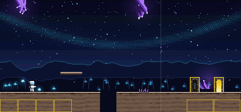
Each is shown behind today's plain pieces, so only the backdrop changes. The strip under it is its pit edge with floors A, B and C in front. All seven scroll in layers, the far ones slower; their pictures move.
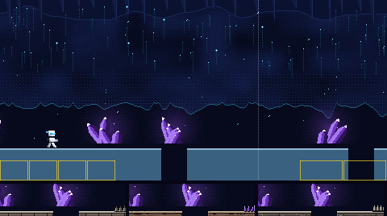
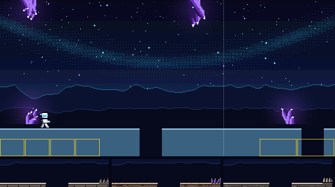
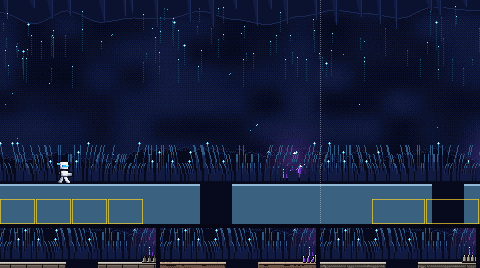
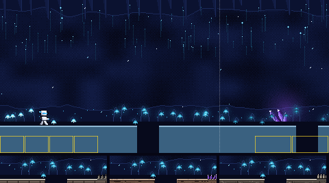
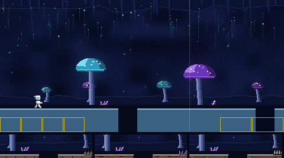
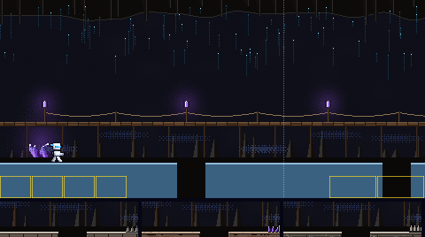
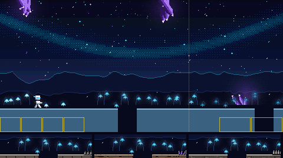
Each shows the floor with a pit, a platform, spikes, the boss door (left) and the exit door (right), in front of today's flat colour. The strip under it is its pit edge against backdrops 1 to 6. The contrast numbers are the worst against any of the six; the game asks at least 2 for the ground, 4.5 for its lit edge and 4.5 for the white player on it.
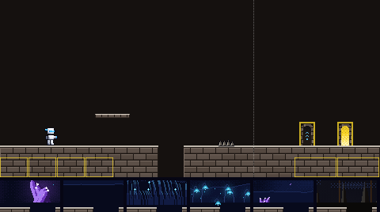
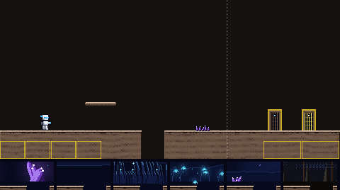
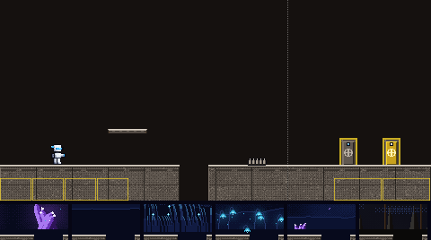